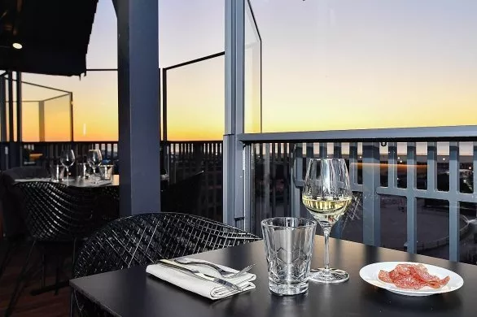
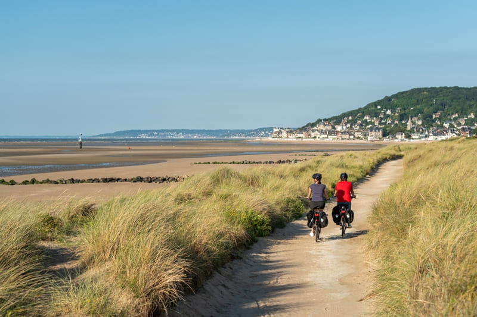
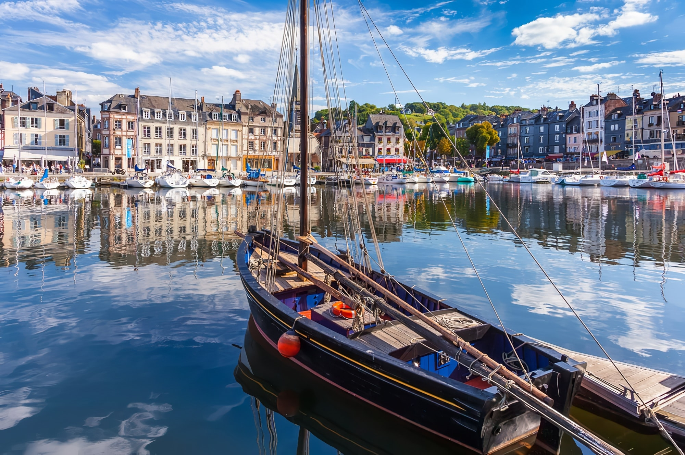
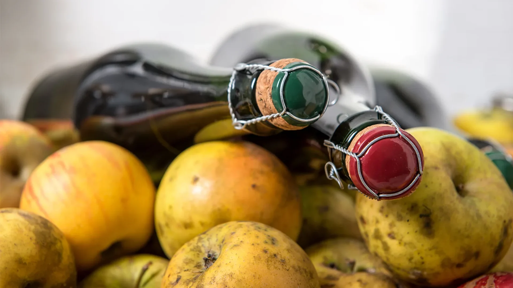
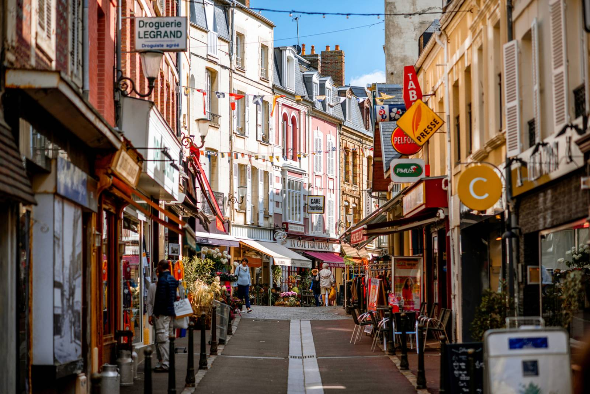

🏖️ Plage
Plage de Cabourg
Une grande plage idéale pour profiter du littoral.
Nos bonnes adresses, plages, activités et coups de coeur pour profiter pleinement de la Côte Fleurie.
Nos sélections
Une grande plage idéale pour profiter du littoral.

Une brasserie sur la Promenade Marcel Proust, pour déguster des plats locaux et profiter de la vue sur la mer.

La Vue des Roches Noires - Route de la Corniche offre un point de vue panoramique captivant le long du littoral spectaculaire de Trouville-sur-Mer
Explorez le guide
Profiter du littoral et découvrir les plus beaux paysages.

Nos bonnes adresses pour manger et se retrouver.

Sport, loisirs et expériences pour tous.

Explorer les villes et villages de la Côte Fleurie.

Produits locaux, marchés et spécialités normandes.

Tout ce qu'il faut savoir pour votre séjour.
Explorez la Côte Fleurie
La Côte Fleurie
La Côte Fleurie